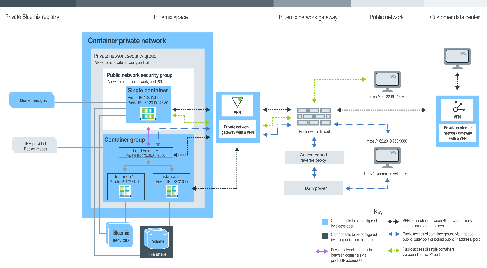
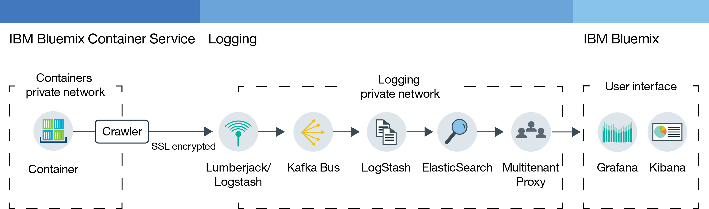

Planning to use single and scalable containers (Deprecated)
• Manage your organization for single containers and scalable container groups
• Set up a namespace for your private Cloud registry
• Quota and available Cloud account types
• Persistent storage setup
• Create single containers and scalable container groups in IBM Cloud Container Service
• Cloud GUI, CLI, or REST API
• IBM public, Docker Hub, and private images
• Private container network settings
• Public network settings
• Integration of Cloud services
• Persistent data storage options
• Container types
• Monitoring and Logging options
Understanding user roles
Containers are managed by organization managers and container developers. The following image shows a sample container configuration of an organization and highlights the components that can be set by either the organization manager or the container developer. 
Review the sub-sections in this topic to find information about every component, and the decision, and configurations that you can make. Some of these configurations cannot be changed after a container is created. Knowing these configurations in advance can help you to assure that all the resources, such as memory, disk space, and IP addresses are available to the development team as well as to maximize the use of your organization quota.Manage your Cloud organization for IBM Cloud Container Service
In Cloud, you can use organizations to enable collaboration among team members and to facilitate the logical grouping of cloud resources in a project. Every organization is assigned an organization manager that is responsible for setting up the development environments (spaces), and to grant team members access to the cloud resources that are needed to successfully create containers for their apps. This set up includes the assignment of public IP addresses, data storage, and container memory. As an organization manager you can also view the current quota and usage of cloud resources, and adjust them as needed.
- Assign organization managers by giving a user the manager role within the organization.
- Assign container creators by giving the user a developer or auditor role within the space.
Setting your organization's namespace for your private Cloud registry
To store and manage private images for IBM Cloud Container Service, every organization is required to set up its own private Docker images registry in Cloud. This name of the private registry is called a namespace and must be unique within Cloud.
Consider the following rules when you choose a namespace for your organization.
- Your namespace must be unique in Cloud.
- Your namespace can be 4-30 characters long.
- Your namespace must start with at least one letter or number.
- Your namespace can only contain lowercase letters, numbers or underscores (_).
From the Cloud GUI follow these steps.
From the CLI, run the following command after logging in to IBM Cloud Container Service:
Retrieving the namespace for your organization
If a namespace for your organization is already set, you can retrieve it from the Cloud GUI or the CLI.
From the Cloud GUI, follow these steps.
From the CLI, log in to IBM Cloud Container Service service and run the following command.
Quota and Cloud accounts
Every organization in Cloud has a preset value for container memory, public IP addresses, file shares, and the number of services that are shared among all spaces of an organization. These preset values are called quota.
Cloud account types
| Account type | Description |
|---|---|
| Free-trial | Free trials for single and scalable containers are not available. Learn about cluster management and migrate to Kubernetes in IBM Cloud Container Service on Cloud Public. |
| Pay-As-You-Go | If you sign up for a Pay-As-You-Go account, you pay only for the Cloud resources that you use. |
| Subscription | If you sign up for a Subscription account, you commit to a minimum spending amount each month and receive a subscription discount that is applied to that minimum charge. You also pay for any usage that exceeds the minimum spending amount. |
| Cloud Dedicated | With Cloud Dedicated, you must sign up for a one year minimum term. What you pay each month during that term is based on the dedicated services that you want, plus a subscription account that gives you access to all public services. |
| Cloud Local | With Cloud Local, you must sign up for a one year minimum term. What you pay each month during that term is based on the local services that you want, plus a subscription account that gives you access to all public services. |
Default quota for paid accounts
| Resource | Paid accounts quota limits |
|---|---|
| Public IP addresses | 64 |
| Container memory | 64 GB Note: Every container in your space contributes to the usage of the quota, whether the
container is running or not. To free up memory, you must remove unused containers.
|
| File shares | 10 file shares |
| Containers and container groups | unlimited number Note: The size of your container and container groups counts towards your
container memory limit, but you are not limited to a specific number of containers.
|
| Images | 25 Note: The IBM images do not count towards your image limit in your private Cloud registry.
|
| Spaces | unlimited number Note: Every space requires at least 2 public IP addresses and 2 GB container
memory which are automatically allocated when you log
into a new space and attempt to use it with the IBM
Cloud Container Service. These resources count towards your
quota, but you are not limited to a specific number of spaces.
|
Allocating quota to a space
- From your account details, in manage organizations, select an organization.
- In the quota section, view the details for containers.
- In the Quota Allocation table, change the quota that is allocated per space by clicking the Edit button.
- Save your changes by clicking the Save button.
Tips to maximize the use of your quota
- Make sure to remove containers that are not in use so that their configurations are not counted toward your quota. For more information, see Removing single containers, Removing container groups, and Remove a multi-container app.
- Do not bind a public IP address to your container when your container must not be accessible from the internet.
- To reduce the public IP address usage, consider using container groups in place of a single container. Container groups use a route for public access that is not subject to the IP address quota. For more information , see Running long-term services as container groups from the Cloud GUI.
Persistent data storage
The organization manager can create file shares with specific storage size and IOPS to meet the storage needs of the space. File shares can be provisioned in sizes from 20 GB to 12 TB and at IOPS per GB of 0.25, 2 or 4. The file share size in relation to the number of IOPS impacts the speed that data can be read and written from and to the container volume.
Creating your containers with IBM Cloud Container Service in Cloud
To create containers that run your app with IBM Cloud Container Service in Cloud, you must have been granted developer rights for an organization space. As a developer of apps, it is important to know how container components are related and how you can change the configuration of a container to meet the functional and non-functional requirements of your app.
Cloud GUI, the command line, and the REST API
When you are planning to work with IBM Cloud Container Service, you can use the Cloud GUI, install the command line interface (CLI), or send HTTP requests against the REST API to access IBM Cloud Container Service.
The Cloud GUI and the CLI can be used to complete the majority of tasks in IBM Cloud Container Service. However, there are tasks that can be performed by either the Cloud GUI or the CLI only. So be prepared to use both to manage your containers.
If you neither want to use the Cloud GUI nor the CLI, you can send HTTP requests directly to the IBM Cloud Container Service API server to manage your containers with REST.
The following table shows all container-related tasks that either require the Cloud GUI, the IBM Cloud Container Service CLI, or the REST API. Tasks that are not listed here can be performed by all methods.| Task | GUI | CLI | API |
|---|---|---|---|
| Review image vulnerabilities |  |
 |
|
| Push images to registry | |
|
|
| Pull images from registry | |
|
|
| Copy images from Docker Hub | |
|
|
| Change quota allocation | |
|
|
| Retrieve organization and space specific quota | |
|
|
| View detailed log information | |
|
|
| Specify more logs | |
|
|
| Customize logs | |
|
|
| Log into a running container | |
|
|
| Use Docker Compose | |
|
|
| List volumes of a space | |
|
|
| Write files to a volume | |
|
|
| Delete a volume | |
|
|
| Retrieve system messages | |
|
|
Installing the CLI
Install and configure your IBM Cloud Container Service CLI to manage your containers from the CLI.
Managing containers via the REST API
Use the IBM Cloud Container Service API to work with your single containers and container groups using REST.
IBM public, Docker Hub, and private images
A container image is the basis for every container that you create. An image is created from a Dockerfile, which is a file that contains instructions to build the image, and build artifacts, such as an app, the app's configuration, and its dependencies. Think of a container image as an executable file (.exe or .bin). As soon as you run the executable app file, you create an instance of your app. When you run a container, you create a container instance from the image. Container images are stored in your private Cloud registry and can be added from the CLI only. Every container image that you want to use must be in a registry before you can create a container from it.
- IBM public images
- Start with one of the IBM public images that are provided by IBM Cloud Container Service, such as the IBM Liberty and IBM Node images to test the features of IBM Cloud Container Service. Then, you can use one of these images as a parent image, modify the Dockerfile and build your own image with your own app code on it.
- Images from Docker Hub
- Copy images directly from Docker Hub into your private Cloud registry or pull an image from Docker Hub, modify it locally, and then build it directly in your registry.
- Create your own image
- If you have container images that you already use in your local Docker environment, you can push them to your private Cloud registry to use them in IBM Cloud Container Service. You can also create your own Dockerfile, build, test it locally, and then push it to your private images registry.
Viewing the images in your private images registry
You can view all container images that are available in your private Cloud images registry by using the Cloud GUI or the CLI.
- From the Cloud GUI, select the catalog and then Containers. You can see images that are provided by IBM and images that you previously pushed to your private Cloud registry.
- From the CLI, run bx ic images.
Reviewing image vulnerabilities
When you add images to your private Cloud registry, they are automatically scanned by the Vulnerability Advisor against standard policies set by the organization manager and a database of known Ubuntu issues. The Vulnerability Advisor checks on inventory packages, configurations, ports opened, and Docker metadata. When the scan is complete, you can review a list of potential vulnerabilities and address them as necessary before you use the image in a container. Depending on the policies that are set by the organization manager, the deployment of a container from that image can be blocked, or a warning is shown to the user.
Dockerfile tips to prevent a container from shutting down
IBM Cloud Container Service offers a lot of features to keep containers secure and manage cloud resources for the user. Depending on your app, it might be necessary to add extra configurations to your Dockerfile to ensure that your local containers can successfully run in Cloud.
- Prepare for network delays
- When a container starts, IBM Cloud Container Service sets up the private container network, and assigns a private IP address to the container. This process might take a few seconds. If your app requires an active network connection at the time the app starts, assure that the IBM Cloud Container Service networking is finished beforehand by adding a sleep command to your Dockerfile.
- Use long-running commands
- To keep a container up and running at least one long-running process is required to be included in the container image. For example, echo "Hello world" is a short running process. If no other command is specified in the image, the container shuts down after the command is executed. To transform the echo "Hello world" command into a long running process, you can, for example, loop it multiple times, or include the echo command into another long running process inside your app.
Private container network settings in IBM Cloud Container Service
A container private network creates an isolated and secure environment for the single containers and container groups that run in one space. Containers that are connected to the same private network can send and receive data from other containers in the private network by using the private IP addresses. Containers are not publicly available until a public port and either a public IP address for single containers or a public route for container groups are bound.
- IBM Cloud Container Service default private network settings
- In Cloud, every space is already provided with a container private network that applies the default IBM Cloud Container Service network settings. These settings include the automatic set up of a default Private Network Security Group that allows private network communication between containers and container groups by using a private IP addresses. When you create a container or container group in a space, they are automatically connected to the default IBM Cloud Container Service private network and assigned a private IP address from the subnet 172.31.0.0/16. After a private IP address is assigned, all containers in the same network can securely communicate on all container ports by using the private IP address of the single container, or, if using a container group, the private IP address of the group's load balancer. No mapping of container ports to a host port is necessary.
- Virtual Private Network to connect your containers to a corporate data center
- Securely connect the single containers and container groups in a private
container network in Cloud to a
corporate data center by using the IBM® Virtual Private Network (VPN) service. IBM
VPN provides a secure end-to-end communication
channel over the internet that is based on the industry-standard Internet Protocol Security (IPsec)
protocol suite. The IPsec protocol offers network-level peer authentication, data integrity, and
data confidentiality by encrypting the packages that are exchanged between the VPN endpoints. To set
up a secure connection between the containers in Cloud and a corporate data center, you must
have an IPsec VPN gateway or SoftLayer server installed in your on-premise data center. With the
IBM
VPN service, you can configure one VPN
gateway per space, and define up to 16 connections to different destinations.
To set up a secure VPN connection to your containers in Cloud, see IBM VPN.
Tips to handle network delays when starting a container
When a container starts, IBM Cloud Container Service sets up the private container network, exposes container ports, and assigns a private IP address to the container. This process might take a few seconds. If your app requires an active network connection at the time the app starts, the container private network might not yet be set up, which can cause the app to crash. To assure that the IBM Cloud Container Service networking is finished before the app starts, consider to implement one of the following solutions to handle network delays.
- Add a sleep command to your Dockerfile that is executed when the container starts.
In the following sample Dockerfile, the container waits 60 seconds before the app is started.
FROM sdelements/lets-chat:latest CMD (sleep 60; npm start) - Adjust your app code to check for an active network connectivity by, for example, pinging a public IP address before the app starts. If you cannot ping the IP address, sleep for a few seconds and then try again. If the IP address can be resolved, start the app.
Determining public network settings
By default, every single container and container group in IBM Cloud Container Service is available to the private network. However, your app might require accessibility from the internet, or you want to access containers in other spaces of your organization. In these cases, you must expose your container to the public. Depending on the type of container that you choose, different ways exist to make a container available to the public.
Single containers and Docker Compose public network settings
All single containers that you create in your space are assigned a private IP address that you can use to access the containers from the private network only. The private network communication is secured by the default Private Network Security Group that does not allow any network traffic to and from a public network. If you want to make your app available to the public network, you must expose a public port, and bind a public IP address to your container.
Public IP addresses must be requested for a space to be bound to a container. When requesting a public IP address, a random one from the public IP address pool is allocated to the space. While allocated to a space, the IP address does not change. To bind a public IP address to a container, you must also expose a HTTP port by using the -p option in the bx ic run command. Exposing a port, creates a Public Network Security Group for your container that allows you to send and receive public data on the exposed port only. All other public ports are closed and cannot be used to access your app from the internet.
The number of public IP addresses that are available to a space depends on your organization's quota.
bx ic ips- No public IP address is available in the space
- CLI output:
IP Address Container ID - My options:Request a new public IP address and bind it to your container.
bx ic ip-requestbx ic ip-bind <IP_ADDRESS> <CONTAINER>
- CLI output:
- A public IP address is available in the space and it is not bound to a container
- CLI output:
IP Address Container ID 192.0.2.56 - My options:Bind the public IP address to your container.
bx ic ip-bind <IP_ADDRESS> <CONTAINER>
- CLI output:
- A public IP address is available in the space but it is already bound to a container
- CLI
output:
IP Address Container ID 192.0.2.56 d7b4a167-8e51-4b16-b591-1a17cb7ee41f - My options:
- Unbind an already bound IP address from a container and bind it to a new
container.
bx ic ip-unbind <IP_ADDRESS> <CONTAINER>bx ic ip-bind <IP_ADDRESS> <CONTAINER> - Request a new public IP address and bind it to your container.
bx ic ip-requestbx ic ip-bind <IP_ADDRESS> <CONTAINER>
- Unbind an already bound IP address from a container and bind it to a new
container.
- CLI
output:
Container group public network settings
To make your container group accessible from the internet, you must expose a port and either bind a public route or a public IP address to it.
- Public route with default domain
- A public route consists of a host and domain name and composes the full public URL that you
enter into your web browser to access the container group. Every route must be unique in Cloud.
You can choose a host name for your route, such as mycontainerhost during container creation. The default system domain is AppDomainName and already provides a SSL certificate, so you can access your container group with HTTPS without any additional configuration.
Example: https://mycontainerhost.AppDomainName
Note: To use a public route, you must expose a HTTP port for your container group during creation. Non-HTTP ports cannot be exposed publicly. You can expose one public port per container group only. Multiple public ports for a container group are not supported. - Public route with custom domain
- If you want to use your own custom domain instead of the default domain AppDomainName, you must register the custom domain on
a public DNS server, configure the custom domain in IBM
Cloud, and then map the custom domain to the
IBM
Cloud system domain on the public DNS
server. After your custom domain is mapped to the IBM
Cloud system domain, requests for your custom domain
are routed to your application in IBM
Cloud.
When you create a custom domain, do not include underscores (_) in the domain name.
To create a custom domains, see Creating and using a custom domain.
To make your custom domain secure, upload a SSL certificate, so your container groups can be accessed with HTTPS.
- Public IP address
- You can also bind an IP address when creating a container group with the command line. You can
only bind a public route or a floating IP address to a container, not both. To remove an IP address
from a container group, you must remove the container group and create the group again.Example of creating a container group with a public IP address:
bx ic group-create -p 9080 --ip 192.0.2.56 --name my_container_group registry.DomainName/ibmliberty
Integrating Cloud services to use with containers
Cloud offers various services that you can use with IBM Cloud Container Service to bring extra capabilities to your app or to simplify the implementation of your app and the management of your container.
- From the Cloud user interface, select the Cloud Catalog.
- From the CLI, run the cf marketplace command.
To find information about services that help you manage your containers, see Integrating services with single and scalable containers (Deprecated).
Persistent data storage options
Decide where to store the data that the app creates or the files that the app requires to run.

| Data storage options | Description | Amount of data that can be stored is limited by |
|---|---|---|
| Option 1: Store the data inside a container during runtime | With this option, you do not persist app data. Data are available to the container during runtime only. When a container is re-created, all the data is lost. | Size of the container |
| Option 2: Store the data in a container volume | When you mount a volume in Docker, the volume is mounted to your local file system. In
IBM
Cloud Container Service, the access to the compute host
is restricted, so you cannot mount host directories to a container. Instead, organization-scoped
volumes are used to persist data between container restarts. Volumes are hosted on isolated file
shares that securely store app data and manage the access and permission to the files. Due to this
isolation, non-root users inside the container must be granted write permission to the mounted
volume. With this option, you can persist and access data between container restarts, and share data between containers in a space. When a container is deleted, the associated volume is not removed. Note: To mount a volume to a container, you must create one first, see Create a volume with the Cloud GUI.
|
Size of the file share that hosts the volume |
| Option 3: Connect your container to an on-premise database | With this option, you can persist and access data in an existing on-premise database by using a secured VPN connection between your containers in the Cloud and your local environment. | Disk space that is available to the on-premise database |
| Option 4: Bind a Cloud database service to your container. | With this option, you can persist and access data by using a database service that is linked to your container in the Cloud. Most Cloud database services provide disk space for a small amount of data at no cost, so you can test its features. | Database service and plan that you choose |
Non-root user access to container volumes in Cloud
For IBM Cloud Container Service, the user namespace feature is enabled for Docker Engine. User namespaces provide isolation so that the container root user cannot gain access to other containers or the compute host. However, volumes are on NFS file shares that are external to the container compute hosts. The volumes are set up to recognize the root user in the container, but because volumes are external to the container they are not aware of user namespaces.
For some applications, the only user inside a container is the root user. However, many applications specify a non-root user that writes to the container mount path. If you are designing an application with a non-root user that requires write permission to the volume, you must add the following processes to your Dockerfile and entrypoint script:
- Create a non-root user.
- Temporarily add the user to the root group.
- Create a directory in the volume mount path with the correct user permissions.
For more information, see create your own Dockerfile with the appropriate non-root permissions.
Container types
Before you create a container with IBM Cloud Container Service, decide on the type of container that you need. IBM Cloud Container Service offers different approaches to create containers in the cloud. The approach that you choose depends on the requirements and dependencies of your app that runs in your container.
Single container
A single container in IBM Cloud Container Service is similar to a container that you create in your local Docker environment. Single containers are a good way to start with IBM Cloud Container Service and to learn about how containers work in the IBM cloud and the features that IBM Cloud Container Service provides. You can also use single containers to run simple app tests or during the development process of an app. Because a single container can be restarted and is not intended for for hosting a long-running program, you must use a container group for any application that requires high availability.
- The size of the image has a significant impact. The smaller the image, the quicker the deployment.
- After the first few times an image is deployed, deployment speeds improve. Initially, the image must be downloaded to the registry on the host. Subsequent deployments are faster.
- The networking setup might take a few minutes.
- A single container deploys faster than a container group because of the routing setup for groups.
- Deployments with linked containers might not be as quick as other deployments because of the connections that must be made.
To create a single container from the Cloud GUI, see Running short-term tasks as single containers (Deprecated).
To create a single container from the CLI, see Running short-term tasks as single containers with the command line interface (CLI).
Container groups
A container group consists of multiple single containers that are all created from the same container image and as a consequence are configured in the same way.
A container group offers further options at no cost to make your app highly available.
- Built-in load balancing
- Anti-affinity to spread container group instances across multiple physical compute nodes
- Auto-recovery of unhealthy container group instances
- Auto-scaling of container group instances based on CPU and memory usage
- Create a second container group within the same space.
- Spread container groups across multiple Cloud regions.
- The size of the image has a significant impact. The smaller the image, the quicker the deployment.
- After the first few times an image is deployed, deployment speeds improve. Initially, the image must be downloaded to the registry on the host. Subsequent deployments are faster.
- The networking setup might take a few minutes.
- A single container deploys faster than a container group because of the routing setup.
- A container group that is not bound to a route deploys quicker than one without a route.
- Container groups that do not have anti-affinity enabled are faster than container groups with anti-affinity. With anti-affinity, the number of hosts that is specified must each download the image layers.
To create a container group from the Cloud GUI, review the Run a container group from the Cloud GUI topic.
To create a container group from the CLI, see Run a container group from the CLI.
Load balancing for a container group
Container groups provide in-built load balancing that routes incoming traffic evenly (round-robin) to the container instances in the group. When a container group is created or instances are added to an existing group, whether you add instances yourself or an instance is re-created during auto-recovery, load balancing is enabled.


- A : Container group with three instances
- B : Load balancer for the container group
- 1, 2, 3 : Instances in the container group
After a new instance is added to the container group, the load balancer makes a TCP socket connection to determine when to start sending traffic to the new container instance. As soon as the container instance starts listening on its defined port, the load balancer starts sending traffic to that instance. The load balancer assigns the group a private IP address so that the group can be accessible to the other containers or services in the same space.
Because this private IP address is assigned to the group and not to individual instances, the private IP address does not change when you add instances to the group or an instance is re-created during auto-recovery. You can find this private IP address by running bx ic group-inspect.
Anti-affinity for a container group
You can choose whether to enable the anti-affinity feature when you create a container group by using the --anti option in the bx ic group-create command.
When anti-affinity is enabled, the container instances are spread across separate physical compute nodes, which reduces the likelihood of containers crashing due to hardware failures.
To use the --anti option from the CLI, you must have installed the IBM Cloud Container Service plug-in (bx ic) version 0.8.934 or later. You might not be able to use this option with larger group sizes because each Cloud region and organization has a limited set of compute nodes available for deployment. If your deployment does not succeed, either reduce the number of container instances in the group or remove the --anti option.
Auto-recovery for a container group
You can choose whether to enable auto-recovery when you create a container group by using the --auto option in the bx ic group-create command.

When automatic recovery is enabled for a container group and the group has been running for 10 minutes, the group's load balancer starts to regularly check the health of each container instance in the group via HTTP requests. If a container instance does not respond within 100 seconds, it is marked as inactive. Inactive container instances are removed from the group and re-created by auto-recovery. Auto-recovery attempts to recover container instances in a group 3 times. After the third attempt, auto-recovery does not recover any container instances in the group for 60 minutes. After 60 minutes, the auto-recovery process starts again.
Auto-scaling for a container group
Container groups offer the possibility to auto-scale container group instances based on the CPU and memory that is used by the app.
Docker Compose
Some apps consist of multiple components, such as database, services and caches, where each component must run in its own container. As orchestrating all containers to start up, link and shut down together can be very difficult, you can use Docker Compose to configure your multi-container deployment and to run it with one command only. Think of Docker Compose as a collection of single container instances where every container is based on its own image and configuration. You configure your multi-container deployment one time and deploy it in Cloud.
- A Docker Compose deployments might not be as quick as other deployments because coordinated deployments are being set-up.
- The size of the image has a significant impact. The smaller the image, the quicker the deployment.
- After the first few times an image is deployed, deployment speeds improve. Initially, the image must be downloaded to the registry on the host. Subsequent deployments are faster.
- The networking setup might take a few minutes.
To configure a multi-container deployment with Docker Compose, see Tutorial: Creating a multi-container deployment with Docker Compose and IBM Cloud Container Service.
Monitoring and Logging
In Cloud, containers come with built-in monitoring and logging, so you can watch the health of your containers closely.
IBM Cloud offers platform-based monitoring and logging capabilities. Metric and log data can be collected from compute instances, like containers, that are running in the cloud and from other sources. Aggregated data from multiple sources can then be visualized for analysis, insights, and action.
- Monitoring
- Container metrics are collected from outside of the container, without having to install and maintain agents inside of the container. In-container agents can have significant overheads and setup times for short-lived, lightweight cloud instances and auto-scaling groups, where containers can be rapidly created and destroyed. This out-of-band data collection approach eliminates these challenges and removes the burden of monitoring from the users.
- Logging
- Similar to metrics, container logs are monitored and forwarded from outside of the container by using crawlers. The data is sent by the crawlers to a multi-tenant Elasticsearch in IBM Cloud, just like logs that are collected by other in-container agents, but without the hassle of having to install the agents inside the container.
To see more on how to collect logs and metrics, as well as how to create custom dashboards, see Monitoring and logging containers